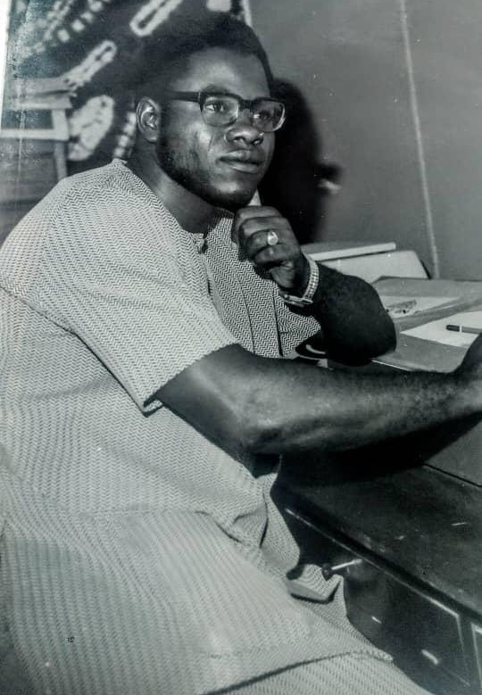
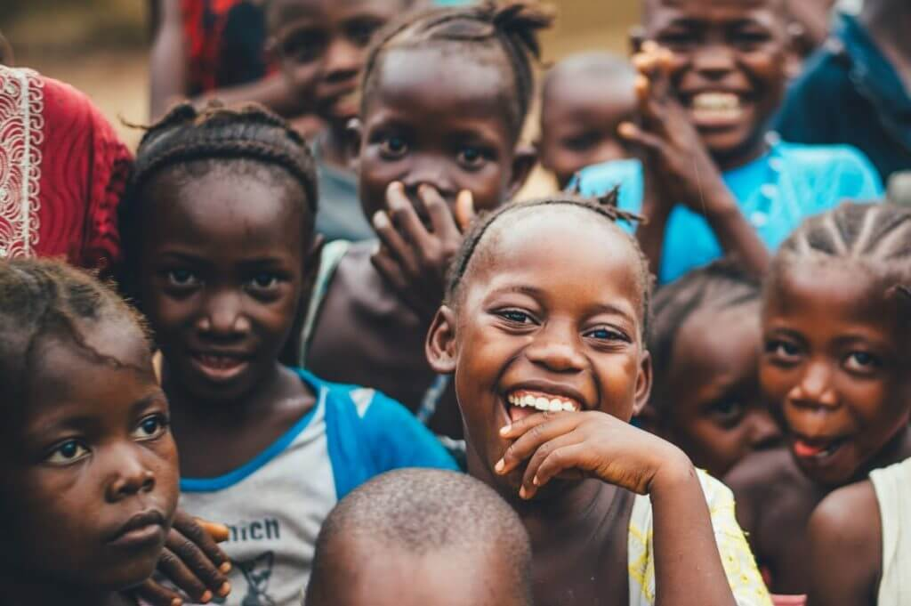
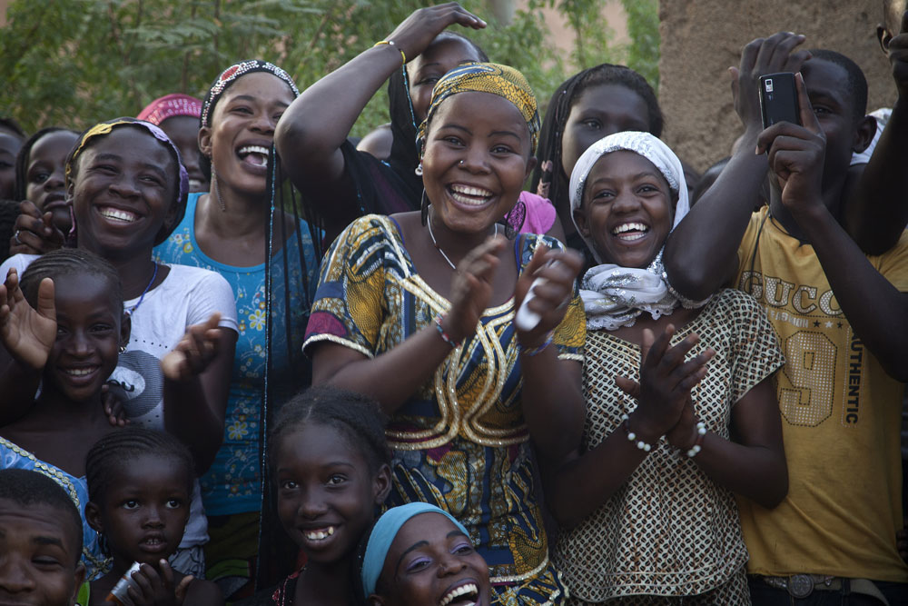
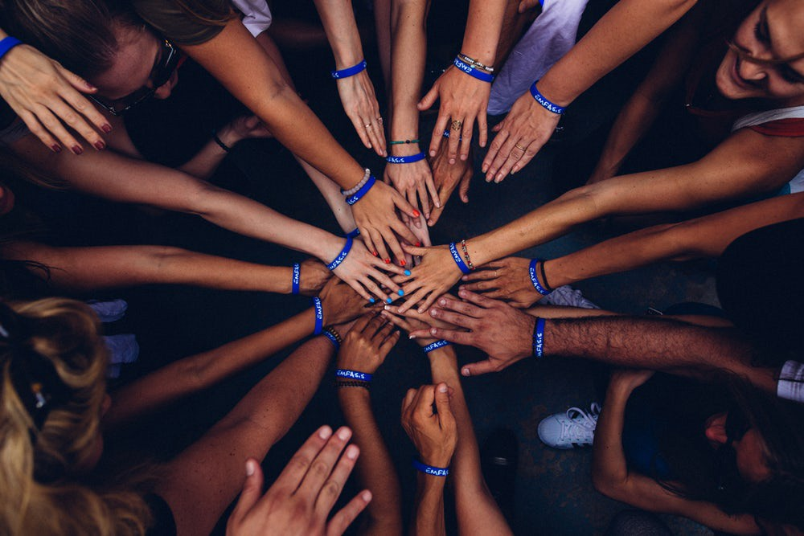
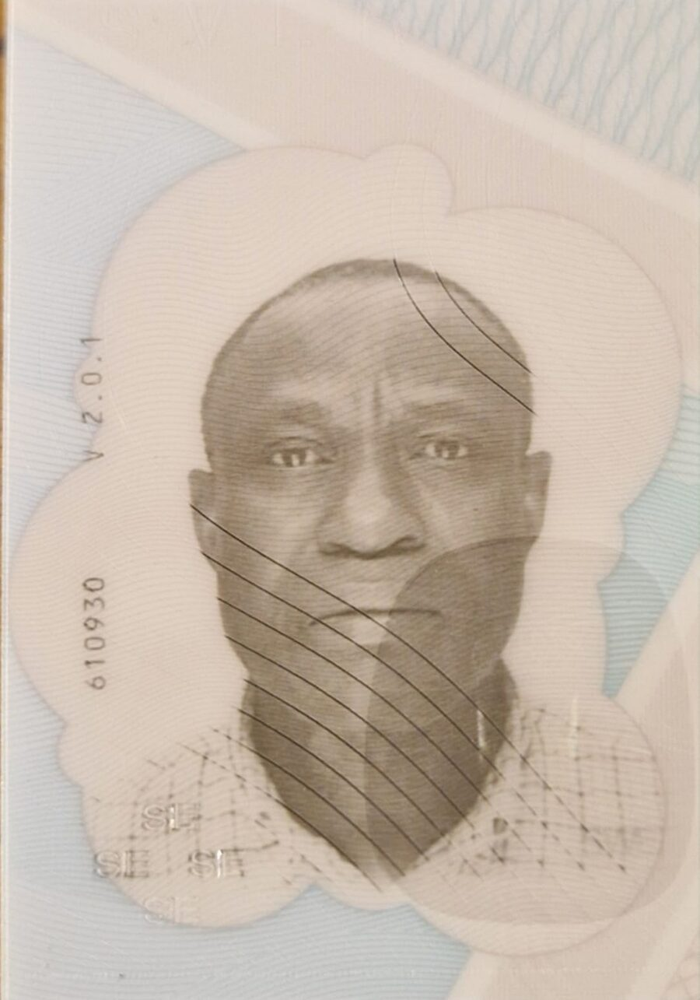
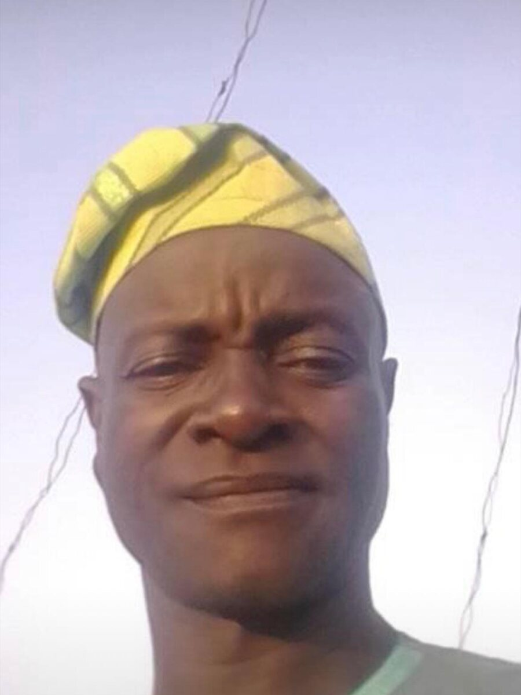
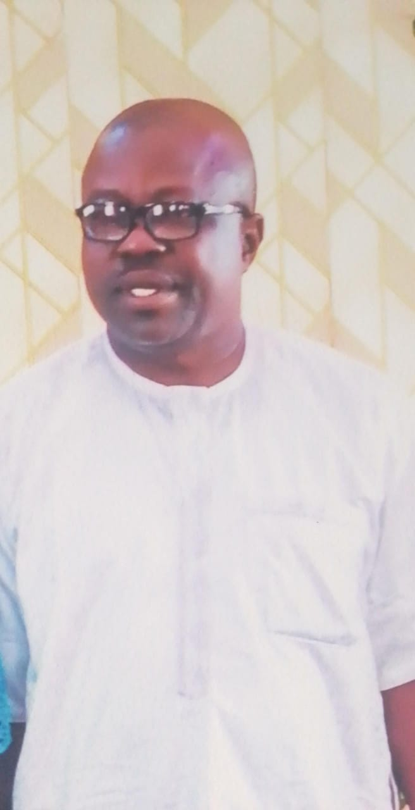
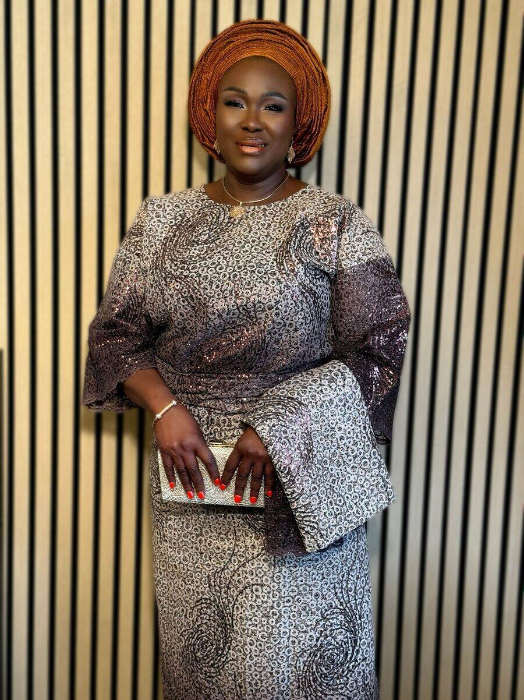
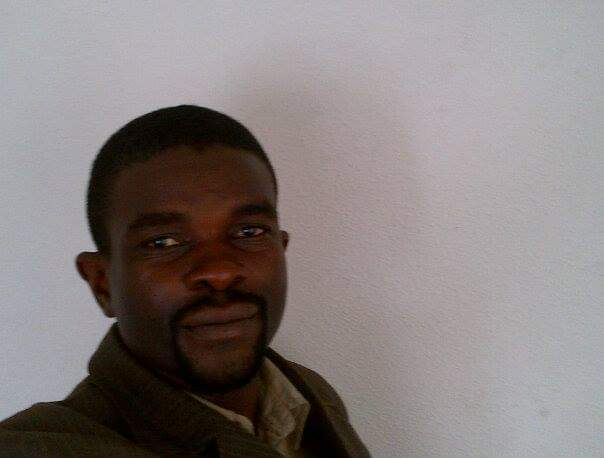
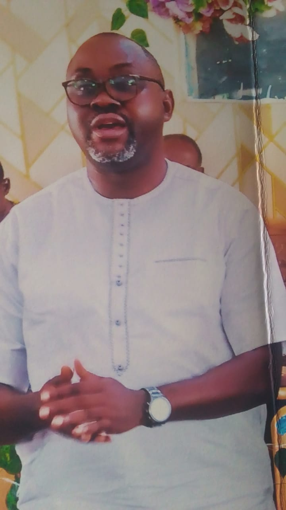

Our vision
To sustain the legacy of Joseph Alabi Adewoye and improve the standard of living through community-focused, creative and developmental initiatives in Ijara-Isin and beyond.
Established in his honour
The Joseph Alabi Adewoye Foundation continues the life's work of a pioneering artist, educator and cultural leader by investing in the people of Ijara-Isin and the communities around it.




Who we are
The Joseph Alabi Adewoye Foundation is a legally registered non-governmental organisation (RC 8401335) established to honour the legacy of Mr. Joseph Alabi Adewoye, a visionary artist, educator and community advocate.
Rooted in Ijara-Isin, Kwara State, we advance human and environmental development through initiatives that reflect his values, from education and cultural promotion to sustainable development and youth empowerment. We believe in building resilient communities through creativity, knowledge sharing and compassionate action.
Governed by a dedicated Board of Trustees and supported by passionate community members, the foundation works to create lasting impact that honours Mr. Adewoye's principles and continues his life's work.
Our guiding purpose
To sustain the legacy of Joseph Alabi Adewoye and improve the standard of living through community-focused, creative and developmental initiatives in Ijara-Isin and beyond.
To promote human and environmental development by initiating and supporting programmes that foster education, artistic expression, cultural awareness and sustainable community growth.
Supporting education, empowering youth, promoting cultural heritage, improving infrastructure and fostering sustainable development in rural communities.
Legacy
B.A. Fine Arts (Ahmadu Bello University) · Cert. S.P.P (London)
Joseph Alabi Adewoye was a pioneering graphic artist and respected educator. Born in Ijara, Kwara State, he began his educational journey at Provincial Secondary School, Ilorin (1959), and later attended Bauchi Teachers College. He graduated from Ahmadu Bello University in 1965 with a distinguished degree in Fine Arts.
Following graduation, he served as a Graphic Art Officer for the Northern Nigeria Ministry of Information and later headed the Graphic Art Section at the Kwara State Military Governor's Office in 1968. Committed to excellence, he furthered his education in London at the London College of Printing, specialising in screen printing, airbrushing, typography and package design.
Upon returning to Nigeria in 1969, he continued his impactful contributions to the arts and public service. In 1973, he was appointed Lecturer in Graphic Design at Ahmadu Bello University. Mr. Adewoye proudly represented Kwara State in numerous cultural and national events, serving with distinction on the Niger Art Council and the National Festival Committee.
He made history as the first Artistic Director of the Graphic Arts Division under the Ministry of Culture and Information, and was also appointed the first Chief Cultural Officer of Kwara State. Notably, he played a key role in the planning committee of FESTAC '77 and was actively involved in the festival's execution, representing Kwara State at the national level as its Chief Cultural Officer.
Late Joseph Alabi Adewoye with the Honourable Minister of Mines and one-time presidential aspirant of the NPN, Late Alhaji Maitama Sule.
The Adewoye family
The children of Mr. Joseph Alabi Adewoye, stewards of his legacy.

Trustee

In loving memoryForever remembered

Trustee

Trustee

Trustee

Trustee
FAQ
Quick answers about the foundation and the man it honours. Can't find what you're looking for? Get in touch.
The Joseph Alabi Adewoye Foundation is a non-governmental organisation established to honour the legacy of Mr. Joseph Alabi Adewoye, a pioneering artist, educator and community advocate. It advances human and environmental development in Ijara-Isin and surrounding communities in Kwara State, Nigeria.
Yes. The foundation is a legally registered non-governmental organisation with the Corporate Affairs Commission (CAC) of Nigeria, registration number RC 8401335.
Joseph Alabi Adewoye was a pioneering Nigerian graphic artist and educator born in Ijara, Kwara State. He graduated in Fine Arts from Ahmadu Bello University in 1965, studied at the London College of Printing, and lectured in Graphic Design at Ahmadu Bello University from 1973. He was the first Artistic Director of the Graphic Arts Division under the Ministry of Culture and Information, the first Chief Cultural Officer of Kwara State, and served on the planning committee of FESTAC '77.
The foundation supports education, youth empowerment, arts and cultural heritage, community infrastructure and environmental sustainability, with a focus on rural communities in and around Ijara-Isin.
The foundation is based on Iji Road, opposite Ijara-Isin Town Hall, Ijara-Isin, Kwara State, Nigeria, and serves Ijara-Isin and the surrounding communities.
The foundation is governed by a Board of Trustees made up of Mr. Adewoye's children: Ademola Julius Adewoye, Kayode Adegoke Adewoye, Yetunde Adunni Adewoye, Adeyinka Alabi Adewoye and Babatunde Adebowale Adewoye. It is supported by members of the community.
Send us a message through the contact form on this page or email adewoyefoundation@gmail.com. We welcome partners, volunteers and supporters who share our commitment to the communities we serve.
Contact
Whether you'd like to partner on a project, support our programmes or learn more about the foundation's work, we'd love to hear from you.
Iji Road, Ijara-Isin
Opposite Ijara-Isin Town Hall
Kwara State, Nigeria